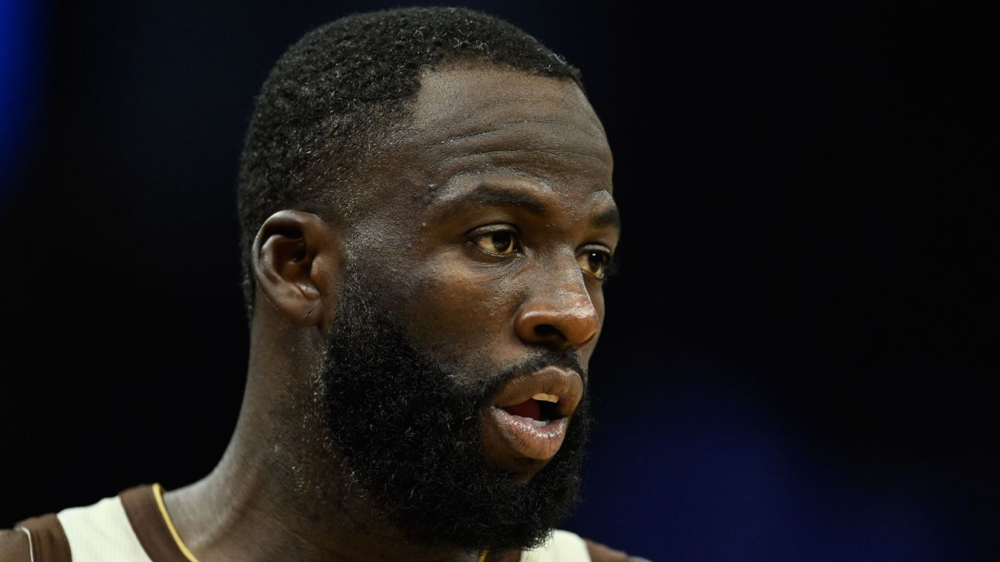
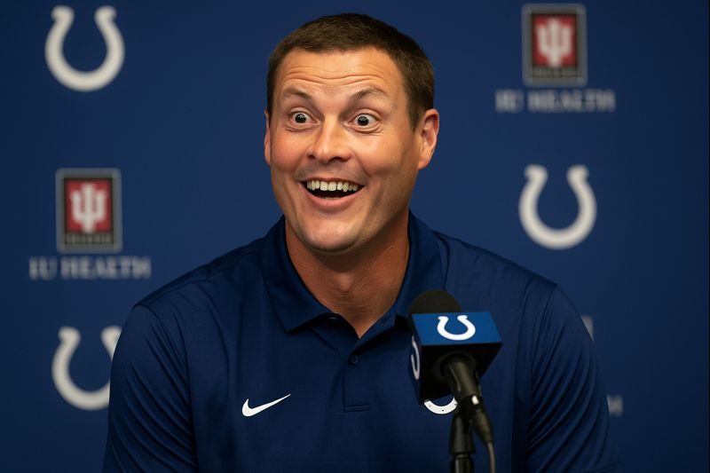
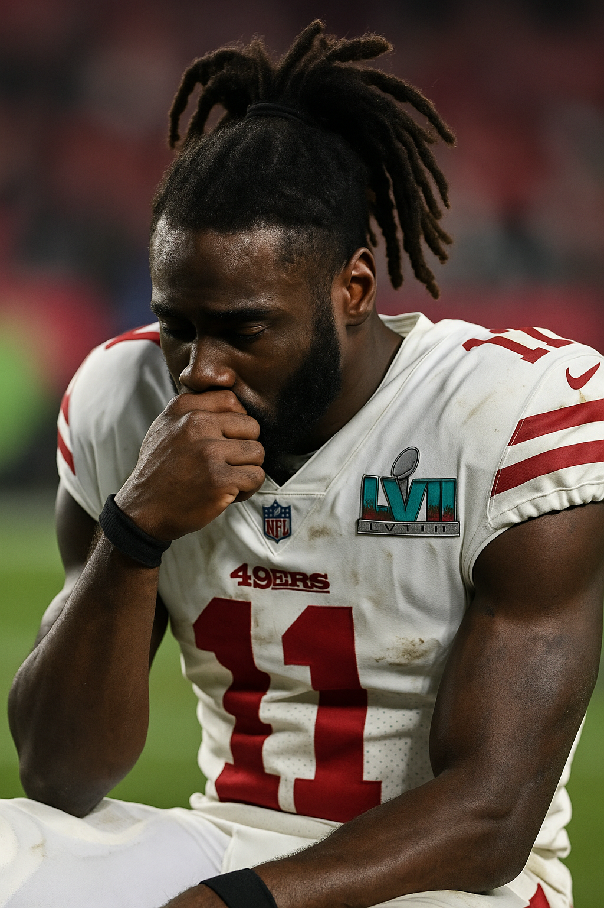
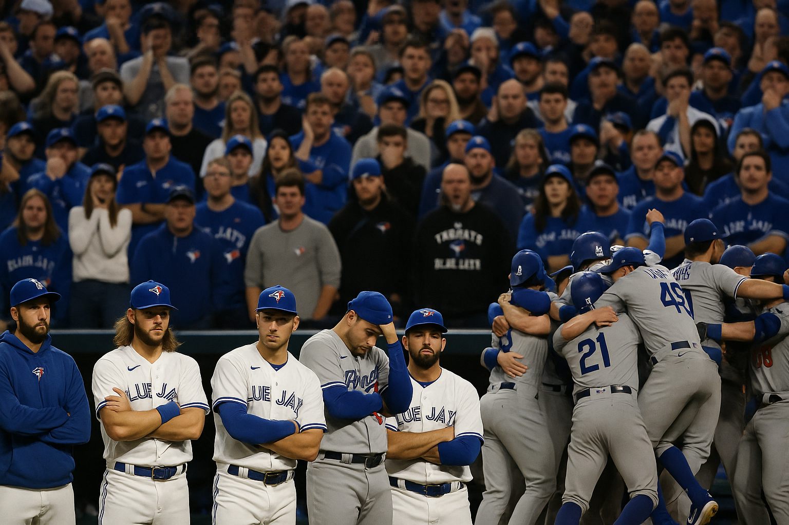
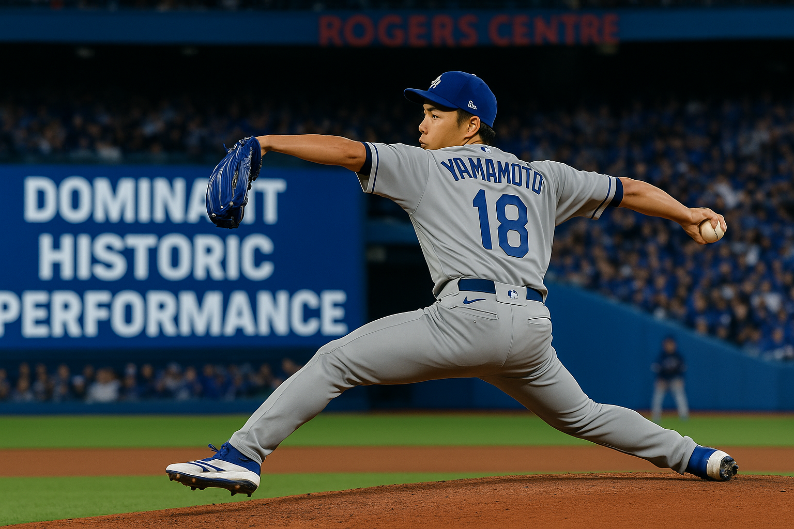
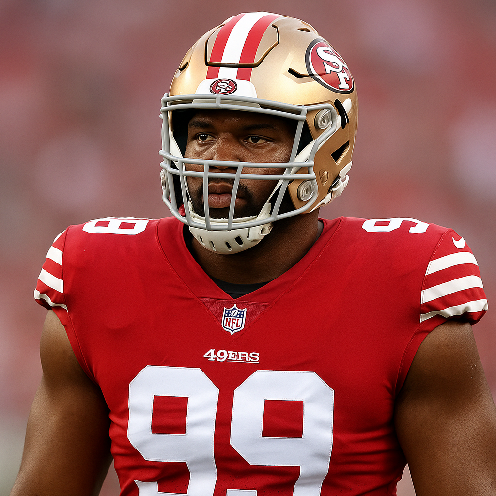
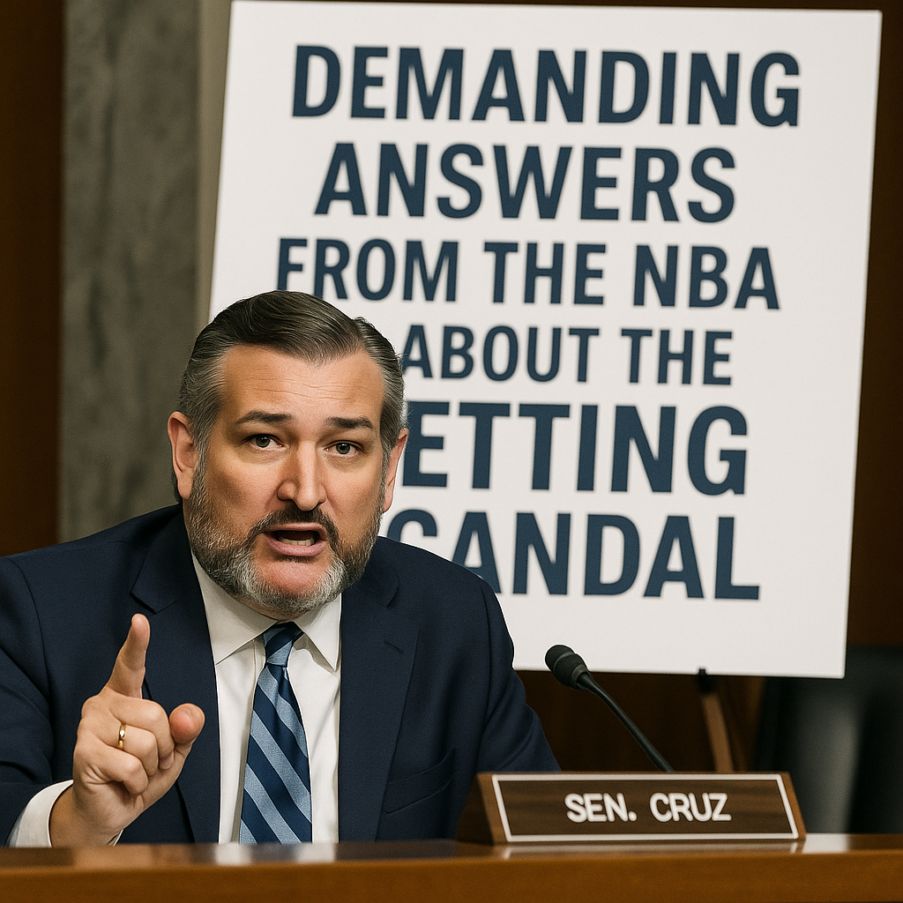
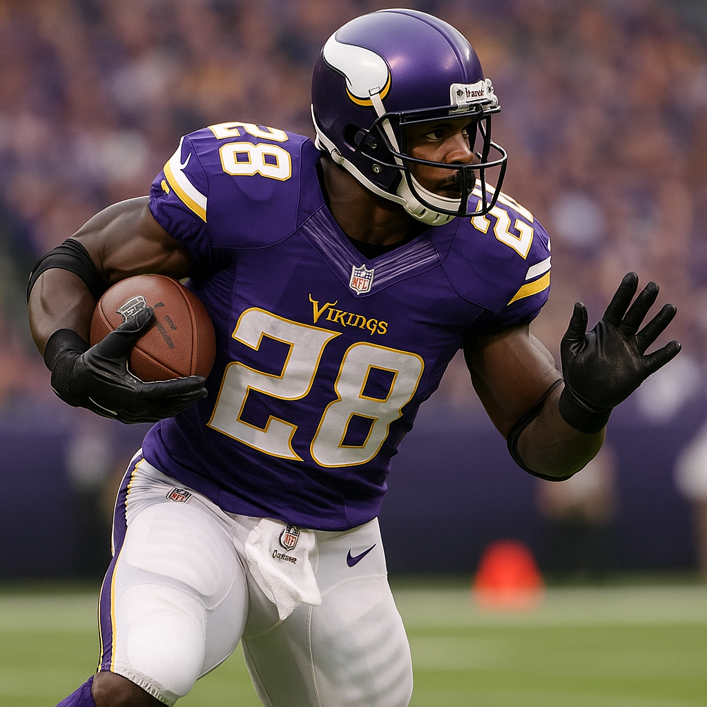

Latest News Headlines
in the Sports and Betting World
DK Metcalf Suspended, Loses $45 Million After Swinging at Lions Fan Who Allegedly Hurled Racial Slurs: The Full Story
Posted: December 24, 2025, 6:15 PM PT

I've been covering sports for a long time, and I've seen plenty of player-fan interactions go sideways. But what happened between DK Metcalf and a Detroit Lions fan on Sunday might be the most complicated, infuriating, and financially devastating incident I've ever witnessed. On the surface, it looks like a star receiver losing his cool and attacking an innocent spectator. Dig a little deeper, and you'll find allegations of racial slurs, a fan who apparently bragged "that was the goal, folks" after provoking the confrontation, prior history between these two individuals, and a league that suspended the player while clearing the fan of any wrongdoing. Oh, and Metcalf just lost $45 million in guaranteed money because of it. Let's break this whole thing down.
What Actually Happened at Ford Field
It was the second quarter of the Steelers' 29-24 win over Detroit on December 21st. The CBS broadcast caught DK Metcalf walking toward a fan in the front row behind the Pittsburgh sideline. The fan was wearing a blue wig and holding what appeared to be a Steelers #4 jersey. What happened next has been replayed thousands of times: Metcalf grabbed the fan by his shirt collar, pulled him forward over the railing, and then shoved him backward with what many observers described as a closed-fist swing toward the fan's head. The fan stumbled back into his seat. No flag was thrown. Metcalf stayed in the game. The fan wasn't ejected.
CBS sideline reporter Tracy Wolfson provided initial context: the fan had been saying something to Metcalf while holding that jersey. But what he said is where this story gets ugly. And depending on who you believe, it's either a case of a player overreacting to harmless teasing, or a case of a fan using the most disgusting language imaginable to provoke a Black athlete into a career-altering moment.
The Fan's Version vs. The Truth According to Sources
The fan has been identified as Ryan Kennedy from Pinckney, Michigan. His version of events, delivered through an attorney, is almost laughably innocent. Kennedy claims all he did was call Metcalf by his full legal name: DeKaylin Zecharius Metcalf. That's it. He says he simply addressed the player by his birth name, and Metcalf responded by grabbing him and ripping his shirt. Kennedy's legal team issued a statement "categorically denying" that he used "the N-word, the C-word, or any racial, misogynistic, or hate-based language during the incident."
Here's the thing: I don't buy it for a second. And neither do multiple people with direct knowledge of what happened.
NFL Network's Tom Pelissero reported that a source close to Metcalf said the fan "called his mother a derogatory word and referred to Metcalf as something we both know you don't call a Black man." Former NFL receiver Chad Johnson, who says he spoke directly with Metcalf after the incident, was more explicit: "He called him a racial slur. He called him the N-word and called his mom the C-word." Pelissero also confirmed that the fan "was hurling racial slurs and expletives at Metcalf prior to him grabbing and shoving the fan."
But wait, it gets worse. This wasn't even the first time Metcalf had encountered this specific fan.
Prior History: Metcalf Reported This Same Fan Last Year
According to Pelissero's reporting, DK Metcalf reported this exact same fan to NFL security during the 2024 season when he was still playing for the Seattle Seahawks. The Seahawks played the Lions in Week 4 of that season, which means Kennedy had apparently targeted Metcalf before, saying things egregious enough that Metcalf felt compelled to alert league security. Whatever happened then wasn't enough to get Kennedy banned. He showed up again this year, found Metcalf on the Pittsburgh sideline, and resumed whatever behavior had triggered the original complaint.
Think about that for a second. A fan allegedly harassed Metcalf with racial slurs in 2024. Metcalf reported him. Nothing happened. The fan came back in 2025, allegedly did it again, and this time Metcalf snapped. And somehow, Metcalf is the one losing $45 million.
"That Was The Goal, Folks"
Perhaps the most damning piece of evidence against Kennedy's innocent-bystander narrative is a video that surfaced showing the aftermath of the confrontation. As Kennedy returned to his seat after being shoved by Metcalf, he can be heard shouting to the fans around him: "That was the goal, folks!"
Let that sink in. The fan who claims he did nothing wrong was bragging about achieving his "goal" of provoking a physical reaction from an NFL player. This wasn't an innocent spectator who got caught up in an unexpected moment. This was someone who came to Ford Field with a specific intention, executed a plan to provoke one of the most physically imposing receivers in the NFL, and then celebrated when it worked. And the NFL looked at all of this evidence and concluded there was "no violation of the fan code of conduct."
The Suspension and the Devastating Financial Fallout
The NFL moved fast on this one. By Monday, DK Metcalf was suspended two games without pay for "conduct detrimental to the league." He appealed, hoping an arbitrator might see the mitigating circumstances. On Tuesday night, his appeal was denied. The suspension stands. Metcalf will miss the final two games of the regular season and won't be eligible to return until the playoffs, assuming Pittsburgh qualifies.
But here's where the story becomes genuinely devastating. Metcalf's contract with the Steelers includes language stating that if he "fails to practice or play with the Club for any reason," including suspension, his future guarantees become "null and void." According to multiple reports, this suspension triggers the voiding of approximately $45 million in guaranteed money: $25 million guaranteed for 2026 and $20 million guaranteed for 2027. Gone. Because a fan allegedly hurled racial slurs at him and he reacted.
The suspension itself will cost Metcalf $277,778 per game, or $555,556 total in salary. But that's pocket change compared to the $45 million in future guarantees that just evaporated. One moment of losing his cool, provoked by what multiple sources describe as the most vile language a person can use, and Metcalf has potentially cost himself generational wealth.
The Fan Faces No Consequences. None.
Despite the eyewitness accounts, the prior history, the "that was the goal, folks" video, and the multiple sources confirming racial slurs were used, the NFL and the Detroit Lions have concluded that Ryan Kennedy did nothing wrong. According to Pelissero, the league determined there was "no violation of the fan code of conduct." Kennedy won't be banned from Ford Field. He won't face any punishment whatsoever.
This is the part that makes me genuinely angry. I understand why the NFL can't allow players to physically confront fans, regardless of provocation. I get it. Once you open that door, you invite chaos. But the idea that a fan can allegedly use the N-word and call a player's mother a disgusting slur, target that same player across two different seasons, brag about his "goal" being achieved, and face zero accountability? That's not protecting fan safety. That's rewarding the absolute worst behavior fans can engage in.
Kennedy's Lawyers: He's Now Receiving Threats
In a statement released after the suspension was upheld, Kennedy's legal team said he has been subjected to "harassment, threats, and messages advocating violence" since the incident became national news. I'm not going to celebrate anyone receiving death threats. That's wrong regardless of what Kennedy did or didn't say. But it's worth noting the irony: Kennedy's attorneys are decrying the harassment their client is receiving, while their client allegedly engaged in a pattern of harassment against Metcalf spanning two NFL seasons. The difference is Metcalf had to take it. Kennedy's getting sympathy.
The Steelers Aren't Walking Away
One piece of good news for Metcalf: despite the contract fallout, the Pittsburgh Steelers have publicly committed to keeping him. According to NFL Network, the team has "already reaffirmed their commitment to Metcalf for 2026 and beyond." The voided guarantees give Pittsburgh significant flexibility. They could cut him with minimal cap implications. They could restructure his deal. But they've chosen to stand by their receiver, at least publicly. Whether that support extends to restoring any of those lost guarantees remains to be seen.
The Bigger Picture: What This Says About the NFL
I keep coming back to the same uncomfortable question: what is a player supposed to do? If you're DK Metcalf, and a fan has targeted you across two seasons with alleged racial abuse, and you've reported it to security, and nothing happened, and now he's back doing it again what's the acceptable response? Walk away? Ignore it? Pretend you didn't hear someone call your mother a vile slur and direct the N-word at you in front of 65,000 people?
The NFL's answer is yes. The acceptable response is to take the abuse, file another report that will likely result in nothing, and continue playing. Anything else costs you millions of dollars and games. The fan, meanwhile, gets to go home, brag about achieving his "goal," and return to Ford Field whenever he pleases.
I'm not saying Metcalf was right to grab and shove Kennedy. He wasn't. You can't put your hands on a fan, period. But the complete absence of accountability for the fan, the "no violation" finding despite overwhelming evidence of targeted harassment, sends a terrible message. It tells fans they can say whatever they want to players, as long as they're willing to absorb the physical consequences. And it tells players that no matter what's said to them, no matter how personal or racist or vile, they have to just take it or lose everything.
The Bottom Line
DK Metcalf lost his temper for about three seconds. In those three seconds, a fan who allegedly called him racial slurs and insulted his mother got exactly the reaction he wanted. Metcalf is now out $45 million in guaranteed money, suspended for two games, and has become a national story for all the wrong reasons. The fan who allegedly provoked him with the most disgusting language possible faces no consequences and will probably be sitting in that same seat next time the Steelers visit Detroit.
None of this is fair. None of it makes sense. And it's a reminder that in the NFL, players are held to a standard of behavior that fans can violate with impunity. Metcalf was wrong to grab Kennedy. But Kennedy was wrong too, if the reports are accurate. Only one of them is paying a price. Only one of them lost $45 million. And only one of them walked away saying "that was the goal, folks."
The system worked exactly as designed. It just wasn't designed to protect the player.
Draymond Green Storms Off After Heated Steve Kerr Altercation: Is This The Beginning of the End for the Warriors Dynasty?
Posted: December 23, 2025, 1:53 PM PT
Look, I've watched Draymond Green do a lot of things over the years. I've watched him kick players, get suspended in the Finals, punch Jordan Poole, and somehow survive it all. But what happened Monday night against the Orlando Magic felt different. This wasn't Draymond losing his cool with an opponent or a ref. This was Draymond going at Steve Kerr his coach, his mentor, the guy who's defended him through everything and then walking off the court with 20 minutes left in the game. That's not just drama. That's a relationship that might be broken beyond repair.
What Actually Happened
The Warriors were trailing the Magic 71-66 early in the third quarter. Draymond had just turned the ball over and was in the process of jawing with an official about a call he didn't like. Kerr called timeout, trying to get his team refocused, and that's when things escalated. Words were exchanged. Voices got raised. Moses Moody and assistant coach Jerry Stackhouse stepped in to try and de-escalate the situation, but it was too late. Draymond made his decision: he walked off the bench, through the tunnel, and into the locker room.
He was gone. With 20 minutes still left in a game the Warriors were losing, their emotional leader, their defensive anchor, their longest-tenured player just quit on his team. "Tempers spilled over, and I thought it was best that I get out of there," Draymond said afterward. "I don't think it was a situation where it was going to get better. It was best to remove myself."
Kerr's response was measured but telling: "We had it out a little bit. He made his decision to go back to the locker room to cool off. That's all I'm going to say about it."
This Isn't An Isolated Incident
Here's what makes this even more concerning: this was the second straight game Draymond left early. On Saturday against the Phoenix Suns, he was ejected after playing just eight minutes. Eight minutes. That's two games in a row where Green couldn't stay on the court for a full game. Two games where his emotional volatility became the story instead of anything the Warriors were trying to accomplish on the court.
And here's the kicker that makes this whole situation even weirder: the Warriors actually played better without him. After Draymond left the Magic game, Golden State went on a massive run. Steph Curry caught fire, shooting 6-for-6 in the third quarter. The team that was trailing by five when Draymond stormed off won by 23 points. The final score was 120-97, and nobody was talking about the victory. Everyone was talking about what the hell just happened between Green and Kerr.
The Elephant in the Room: Is Draymond Tradeable?
Let's have an honest conversation about where this goes from here. Draymond Green is 34 years old. He's making $22.2 million this year and has a player option for $25.8 million next season. His defensive skills, while still elite, aren't what they used to be. He's a liability on offense more often than he's an asset. And his emotional baggage at this point in his career is absolutely massive.
If the Warriors wanted to trade him, who's taking that contract? Who's taking that risk? This is a guy who punched his own teammate, who's been suspended multiple times, who just walked out on his coach in the middle of a game. The list of teams willing to bet on Draymond being a positive locker room presence is extremely short. Maybe non-existent.
But here's the thing: the Warriors might not have a choice. This isn't about what Draymond did on Monday night in isolation. This is about a pattern of behavior that shows no signs of changing. This is about a player who seems incapable of controlling himself when things get emotional. And if you're the Warriors' front office, you have to start asking yourself: how many more incidents can we absorb before this becomes untenable?
Kerr Has Defended Draymond For A Decade. Does He Still?
Steve Kerr has been Draymond's biggest defender for years. Through every suspension, every controversy, every moment where the rest of the basketball world wanted to write Green off as a cancer, Kerr was there saying the same thing: "We need Draymond. He's a champion. We've been together for a long time."
He said almost those exact words again Monday night: "We need Draymond. He's a champion. We've been together for a long time. It's unfortunate what happened, but it happened."
But for the first time, I'm not sure Kerr fully believes it. There was something in his tone after the game. Something in the way he deflected questions. Something in the way he wouldn't promise there would be no discipline. "Everything is private," Kerr said. That's not the full-throated defense we've seen in the past. That's a coach who's exhausted, who's been down this road too many times, and who might finally be reaching his limit.
The End of an Era?
The Warriors dynasty was built on three pillars: Steph Curry, Klay Thompson, and Draymond Green. Klay left last summer for Dallas. Kevin Durant left years ago. The core that won four championships together has been slowly dismantled, and what's left feels more fragile than ever.
Steph is 36 years old and still playing at an MVP level, but he can't do this forever. The supporting cast is young and unproven. And now the emotional leader of the franchise, the guy who was supposed to hold everything together with his intensity and his fire, is having public blowups with his own coach. This doesn't feel like a team that's building toward something. This feels like a team that's falling apart.
Maybe they patch things up. Maybe Draymond and Kerr have a long conversation, hug it out, and move on like nothing happened. They've done it before. "Sometimes you're with people for a long time and there's a level of comfort and stuff happens," Draymond said. "We move forward."
But at some point, moving forward becomes impossible. At some point, the incidents pile up so high that the relationship is irreparable. We might not be there yet. But we're closer than we've ever been. And if the Warriors are smart, they're already having internal discussions about what a post-Draymond future looks like. Because ready or not, that future might be arriving sooner than anyone expected.
The Bottom Line
Draymond Green is still one of the most unique players in NBA history. His defensive instincts, his passing, his ability to guard multiple positions all of it made him a cornerstone of a dynasty. But his volatility has become a liability that's impossible to ignore. Walking off the court during a game to argue with your coach is the kind of thing that gets role players cut. For a franchise legend, it forces uncomfortable conversations.
The Warriors are currently 15-15, fighting just to stay above .500. They need stability. They need maturity. They need the Draymond Green who led them to championships, not the Draymond Green who can't get through a week without an incident. Which version they get for the rest of the season will probably determine whether this era ends with a whimper or one last run. Right now, I'm not betting on the latter.
Philip Rivers Signs with Colts, Will Start Sunday Against Seahawks After Five Years Away
Posted: December 14, 2025, 1:08 AM PT
I've been covering sports for a long time, and I genuinely don't know if I've ever seen anything like this. Philip Rivers, who retired after the 2020 season and hasn't taken an NFL snap in nearly five years, just signed with the Indianapolis Colts and is expected to start Sunday against the Seattle Seahawks. Let that sink in for a second. A 43-year-old quarterback who's been coaching high school football in Alabama is about to walk into an NFL stadium and face one of the league's most aggressive defenses. This isn't a movie. This is actually happening.
A Desperate Move by a Desperate Team
The Colts are desperate. That's the only way to explain this. Their quarterback situation has been a catastrophe all season, and with injuries piling up and the playoff picture still mathematically alive if you squint hard enough, Indianapolis made a call that most of us thought was a joke when the rumors started circulating earlier today. But here we are. Rivers flew into Indianapolis Friday night, signed his contract Saturday morning, and has been in the facility trying to cram a month's worth of playbook installation into about 36 hours. This is insanity.
Let's talk about what we're actually looking at here. Philip Rivers last played on January 9, 2021, when the Colts lost to the Buffalo Bills 27-24 in the Wild Card round. That was 1,800 days ago. That's not a typo. He hasn't thrown a competitive football pass in nearly five years. The last time Rivers was on an NFL field, Joe Biden had just won the election, COVID vaccines were just rolling out, and most of us were still in lockdown wondering when life would return to normal. The NFL has changed dramatically since then. Defenses are faster, more complex, and far more athletic than they were when Rivers hung it up.
Walking Into a Buzzsaw
And he's walking into this against Seattle. The Seahawks aren't some bottom-feeder defense you can throw rust off against. They're physical, they're aggressive, and they're going to come after Rivers from the first snap. Seattle has been getting after quarterbacks all season, and their secondary has the kind of ball hawks who can turn a slightly underthrown pass into a pick-six before you can blink. Rivers is going to be standing in the pocket trying to remember timing routes while edge rushers half his age are screaming toward him at full speed. I honestly don't know how this ends in anything other than disaster.
Here's the thing about Rivers that makes this even more complicated. Even in his prime, he wasn't exactly mobile. His game was always about processing speed, anticipation, and that funky sidearm delivery that somehow found windows nobody else could see. He was never running away from pressure. He was never extending plays with his legs. His entire game depended on reading defenses pre-snap, getting the ball out quick, and trusting his arm to fit throws into tight spaces. All of that requires timing with your receivers, comfort in the offense, and most importantly, reps. Rivers has had none of that. He's been throwing to high school kids in Alabama, not NFL wideouts running option routes at full speed.
The Physical Reality of a 43-Year-Old Arm
The physical concerns are massive. We're talking about a 43-year-old arm that hasn't faced NFL-caliber competition in half a decade. Arm strength deteriorates. Reaction time slows. The ability to take hits and bounce back isn't what it used to be. Rivers was tough as nails back in the day, played through injuries that would sideline most quarterbacks, but that was a different Philip Rivers. That was a guy in his 30s with years of NFL conditioning keeping his body ready for the punishment. The Rivers walking into Lucas Oil Stadium on Sunday is a high school coach who probably hasn't been hit by anyone over 200 pounds since he retired.
No Historical Precedent
I keep trying to find a historical comparison for this, and I genuinely can't. Brett Favre came out of retirement, sure, but he'd only been away for a year and he was still in football shape. Vinny Testaverde played until he was 44, but he never fully stepped away from the game. George Blanda played quarterback into his late 40s, but that was a completely different era when the position was barely recognizable compared to what it is today. What Rivers is attempting has no real precedent. A five-year layoff followed by an immediate start against a legitimate NFL defense? This doesn't happen. This isn't supposed to be possible.
The Colts coaching staff has to know this is a Hail Mary in every sense of the word. They're not bringing Rivers in because they think he's the answer. They're bringing him in because they've run out of answers and they're hoping that maybe, just maybe, his football IQ can compensate for everything else that's working against him. Rivers always played like a coach on the field. He audibled constantly, he identified blitzes, he manipulated defenses with his eyes and his cadence. If there's any chance this works, it's because Rivers can still see the game at an elite level even if his body can't execute at one.
But here's the problem with that logic. Seeing the game and executing in the game are two completely different things. Rivers might recognize a Cover 2 shell pre-snap. He might know exactly where the soft spot in zone coverage should be. But can he still make the throw? Can he still deliver the ball with the velocity needed to beat a closing safety? Can he still process in real time when everything around him is moving at NFL speed? These aren't rhetorical questions. These are genuine concerns that are going to be answered very publicly on Sunday afternoon.
Seattle's Dream Scenario
The Seahawks have to be licking their chops. From a game planning perspective, this is a gift. They know Rivers hasn't practiced with this team. They know he doesn't have timing with his receivers. They know he's not in NFL shape. They can dial up pressure without worrying about him escaping the pocket. They can jump routes knowing that his arm might not be able to make them pay deep. Every advantage a defense could possibly have, Seattle has it tenfold in this matchup. If they don't come out aggressive and try to rattle Rivers early, they're making a massive mistake.
The Betting Angle
From a betting perspective, this is one of the most volatile situations we've seen all season. The line movement is going to be wild once the market fully digests what's happening. How do you even handicap this? Rivers could come out and look like he never left, threading passes with that trademark confidence and command. Or he could look like exactly what he is: a 43-year-old who hasn't played in five years and has no business being on an NFL field. There's almost no middle ground here. This is going to be either a heartwarming comeback story or a brutal, embarrassing reminder of why players retire in the first place.
Respecting the Legend, Questioning the Decision
I have so much respect for Rivers as a player and as a competitor. The guy was a warrior his entire career. He played through torn ACLs, broken ribs, and countless other injuries that would have sidelined lesser men. He's one of the most prolific passers in NFL history, a future Hall of Famer whose numbers stack up against anyone who's ever played the position. But none of that matters on Sunday. What matters is whether a 43-year-old body can still do what an NFL quarterback needs to do. And I just don't see how this ends well.
The worst part is that Rivers probably knows all of this. He's not stupid. He's one of the smartest players to ever play the game. He knows the odds are stacked against him. He knows people are going to say he's too old, too rusty, too far removed from the game. But when the Colts called, he answered. Maybe it's because he misses the competition. Maybe it's because he couldn't say no to one more chance. Maybe he genuinely believes he can still play at this level. Whatever the reason, he's putting himself out there in a way that takes genuine courage, even if the outcome seems predetermined.
The Bottom Line
Sunday is going to be must-watch television for all the wrong reasons. We're either going to witness something genuinely miraculous, or we're going to watch a legend get destroyed by a game that passed him by half a decade ago. There's no script for what's about to happen. There's no precedent to guide our expectations. Philip Rivers is about to attempt something that borders on impossible, and we're all going to be watching to see how it plays out. God speed, Felipe Rios. You're going to need it.
How Kyle Shanahan's Super Bowl Collapse Destroyed Brandon Aiyuk: The 15 Month Downward Spiral That Ended a 49ers Career
Posted: November 21, 2025, 6:14 PM
It started with a coin flip. Or maybe it started way before that, when Kyle Shanahan decided he didn't need to tell his players about the playoff overtime rules before the biggest game of their lives. Either way, February 11th, 2024 was the night everything changed for Brandon Aiyuk and the San Francisco 49ers. They just didn't know it yet.
The Coin Flip That Broke Everything
Super Bowl LVIII went to overtime tied at 19. The 49ers won the coin toss, and in that moment, Shanahan made a decision that would haunt his franchise for years. He chose to receive the ball first. Not defer. Not put Patrick Mahomes on the field knowing they'd need a touchdown to win. Receive first.
His reasoning? He wanted the ball third. If both teams scored, San Francisco would have the last possession and could win it. That's what he told the media afterward. That's what his analytics team told him. The problem is, Andy Reid's analytics team told him the exact opposite. The Chiefs had spent two weeks studying the new playoff overtime rules. They knew exactly what to do if they won the toss: kick it to San Francisco, play defense, then get the ball back with all the information they needed.
And here's where it gets worse. Multiple 49ers players admitted after the game they didn't even know the overtime rules. Defensive lineman Arik Armstead said it out loud: "I didn't even know about the new playoff overtime rule. It was a surprise to me." Other players found out when the scoreboard explained the rules during the break. Meanwhile, Kansas City's Chris Jones said they'd been talking about it for two weeks. Patrick Mahomes knew. Andy Reid knew. The entire Chiefs organization was on the same page.
Shanahan didn't feel the need to discuss it with his team. That decision, that arrogance, that assumption his guys would just figure it out, cost the 49ers their second Super Bowl in five years. And it cost them something else too. It cost them Brandon Aiyuk.
What Happened in Overtime: A Masterclass in Mismanagement
The 49ers took the ball first and marched down the field. Brock Purdy connected with Aiyuk for an 11 yard gain on third and 2. They were moving. But on third and 4 near the red zone, Purdy overthrew his target and appeared to miss Aiyuk wide open on the other side of the field. San Francisco settled for a field goal. 22 to 19.
Then Mahomes got the ball. And because Kansas City knew they needed a touchdown to win, they played with house money. Fourth and 1 from their own 34? Go for it. In a regular overtime scenario, you punt there every single time. But the Chiefs had all the information. They knew a field goal wouldn't win it. They knew they had to score a touchdown. So they went for it on fourth down, converted, kept the drive alive, and Mahomes hit Mecole Hardman for the game winning touchdown on a 13 play, 75 yard drive.
Game over. Chiefs win. Shanahan loses his third Super Bowl as a head coach or coordinator. And Brandon Aiyuk? He was standing on the sideline watching it all fall apart, knowing his coach gave the game away.
The Instagram Post That Said Everything
While the confetti was still falling at Allegiant Stadium, while Chiefs players were celebrating their third championship in five years, Brandon Aiyuk posted something on Instagram that set off alarm bells across the Bay Area. "Don't forget what got you there."
It was vague. It was cryptic. But it wasn't subtle. Aiyuk and his family started posting messages criticizing how he was used during the Super Bowl, taking shots at Shanahan's play calling and even at Brock Purdy. This wasn't a guy who was disappointed they lost. This was a guy who was furious about how they lost and who was responsible.
Aiyuk had just finished the best season of his career. 75 catches, 1,342 yards, seven touchdowns in 2023. He was a legitimate number one receiver, one of the best in the league, and he felt like Shanahan's incompetence had robbed him of a championship. That resentment didn't go away when the offseason started. It got worse.
The Contract Standoff: A Relationship Already Broken
By the summer of 2024, the situation had deteriorated completely. Aiyuk wanted a contract extension. The 49ers wanted to pay him, but not what he was asking. So Aiyuk sat out. He skipped organized team activities. He skipped mandatory minicamp. And then he officially requested a trade.
Multiple teams got involved. The Pittsburgh Steelers actually had a deal in place. San Francisco and Pittsburgh agreed on compensation. Aiyuk had a contract offer from the Steelers and a contract offer from the 49ers. It looked like he was gone. And honestly, it probably would have been better for everyone if he had been.
Instead, at the last minute, Aiyuk took the 49ers' offer. Four years, 120 million dollars, with 45 million fully guaranteed. On paper, it looked like the relationship was saved. In reality, it was already over. Shanahan was reportedly bothered by Aiyuk's behavior during the holdout, frustrated with what he saw as brooding and a lack of professionalism. Aiyuk showed up to training camp in July but staged a hold in, attending meetings but refusing to practice until he got his money.
When the deal finally got done on August 30th, just days before the season started, it felt less like a reunion and more like a business transaction between two parties who didn't trust each other anymore.
The 2024 Season: A Star Receiver Who Stopped Caring
Something was wrong from the start of the 2024 season. Aiyuk looked disengaged. His numbers were terrible. Through seven games, he caught just 25 passes for 374 yards. Zero touchdowns. His 53.4 yards per game were the second fewest of his career. His 53.2 percent catch rate was a career low. For a guy who'd just signed a 120 million dollar extension after averaging over 80 yards per game the year before, it was a stunning collapse.
People tried to explain it away. Maybe he missed training camp and wasn't in rhythm with Purdy. Maybe defenses were focusing on him more. Maybe it was just a slow start and he'd figure it out. But the reality is simpler and darker. Aiyuk didn't want to be there anymore. He didn't trust Shanahan. He didn't believe in the offense. And he was playing like someone who'd mentally checked out.
Then came Week 7. October 20th, 2024. The 49ers were playing the Kansas City Chiefs. The same team that beat them in the Super Bowl. The same team that benefited from Shanahan's overtime idiocy. And in that game, Brandon Aiyuk's knee gave out. Torn ACL. Torn MCL. Some reports said he tore his PCL too. Season over. Career with San Francisco, as it turns out, over.
The Injury That Became an Excuse to Quit
Aiyuk had surgery in November 2024. The initial timeline had him targeting a return around Week 6 of the 2025 season. That seemed aggressive for a multi ligament knee injury, but the 49ers were publicly optimistic. Thirteen months later, as of November 2025, Aiyuk still hasn't returned to the field. And it's becoming clear he never will. Not in a 49ers uniform, anyway.
Head coach Kyle Shanahan confirmed this week that the team would not open Aiyuk's 21 day practice window. General Manager John Lynch said they expected him back at some point, maybe closer to playoff time, but the tone was skeptical. Behind the scenes, sources say the 49ers have become frustrated with Aiyuk missing meetings and other team activities during his rehab. There's been a lack of communication. A lack of engagement. A lack of any indication that Aiyuk wants to be part of this organization.
And honestly, why would he? The coach who gave away a Super Bowl is still calling plays. The quarterback who missed him open in overtime is still starting. The front office that dragged out his contract negotiation until the last possible second is still running the team. From Aiyuk's perspective, nothing has changed except now he's rehabbing a devastating knee injury for a franchise he doesn't believe in anymore.
The 49ers Cut Ties: Voiding $25 Million and Ending a Marriage That Never Worked
In a move that surprised absolutely nobody paying attention, the 49ers voided Brandon Aiyuk's future guaranteed money back during training camp. The reason? Failure to live up to terms of his contract. Translation: he stopped showing up, stopped participating, and stopped pretending he wanted to be there.
The 49ers voided his 2026 option bonus, which would have paid out nearly 25 million dollars. Without those guarantees, there's no reason for San Francisco to keep him on the roster. Multiple league sources confirm that Aiyuk told NFL Players Association representatives he would not fight the move via an official grievance. He's not contesting it. He's not trying to get his money back. He just wants out.
The expectation now is that the 49ers will release Aiyuk at the end of the 2025 season, making him a free agent. A four year, 120 million dollar contract that lasted exactly seven games before a catastrophic injury and a complete breakdown of trust between player and organization. It's one of the most spectacular flameouts in recent NFL history, and it all traces back to one moment in February 2024.
The Bigger Picture: When a Coach Loses His Locker Room One Player at a Time
This isn't just about Brandon Aiyuk. It's about what happens when players stop believing in their head coach. Kyle Shanahan has now lost three Super Bowls. The 28 to 3 collapse as offensive coordinator in Atlanta. Super Bowl LIV when the 49ers blew a ten point fourth quarter lead to Kansas City. And now Super Bowl LVIII, where he won the coin toss and still managed to hand Patrick Mahomes the trophy.
Players notice that stuff. They notice when their coach doesn't prepare them for overtime rules. They notice when he makes decisions that cost them championships. And some of them, like Brandon Aiyuk, decide they don't want to run through a wall for a guy who keeps running them into walls himself.
Aiyuk's Instagram post the night of the Super Bowl said it all. Don't forget what got you there. What got them there was an elite defense, a strong running game, and playmakers like Aiyuk making plays when it mattered. What lost them the game was a head coach who thought he was smarter than everyone else in the room, including Andy Reid and the entire Kansas City Chiefs organization.
Reports started surfacing months after the Super Bowl that Aiyuk's relationship with Shanahan had deteriorated significantly. The contract holdout made it public, but the rift started way before that. It started when Aiyuk realized his head coach had given away a championship because he either didn't understand the overtime rules or was too arrogant to think they mattered.
What Happens Next: A Cautionary Tale for Both Sides
Brandon Aiyuk will be a free agent in 2026, assuming the 49ers follow through and release him. He'll be 28 years old and 16 months removed from a multi ligament knee injury. That's not an ideal situation for a receiver trying to get another big contract, especially after playing just seven mediocre games following a 120 million dollar extension.
But Aiyuk will also be free from an organization he clearly doesn't want to be part of anymore. He'll get a fresh start somewhere else, probably on a prove it deal, and he'll have a chance to rebuild his value without the baggage of a relationship that was broken the moment Kyle Shanahan chose to receive the ball in overtime.
For the 49ers, this is an embarrassment. You gave a star receiver 120 million dollars and got seven games of replacement level production before the whole thing imploded. You lost a Pro Bowl talent because your head coach couldn't be bothered to explain playoff overtime rules to his team before the Super Bowl. And now you're cutting ties with a guy who should have been a centerpiece of your offense for the next four years.
Kyle Shanahan is one of the best offensive minds in football. Nobody disputes that. But his resume in the biggest moments is ugly. Three Super Bowl losses. Catastrophic clock management. Overtime decisions that defy logic. And now, players who don't trust him anymore because they've watched him blow it too many times.
Brandon Aiyuk is just the latest casualty. He won't be the last. Because until Shanahan figures out how to win the games that matter, the best players are going to keep looking for the exits. And it all started with a coin flip that should have been the easiest decision of his career.
The Final Word: A Super Bowl Lost and a Career Destroyed
Fifteen months ago, Brandon Aiyuk was standing in Allegiant Stadium watching his team lose a Super Bowl they should have won. The coach made the wrong call. The quarterback missed him open. The defense couldn't get one stop when it mattered most. And somewhere in that moment, Aiyuk decided he was done.
He went through the motions in the offseason. He fought for his contract. He showed up and put on the uniform. But his heart wasn't in it. You could see it in the numbers. 25 catches, 374 yards, zero touchdowns. Those aren't the stats of a guy who just had a career year. Those are the stats of someone who stopped caring.
Then the injury happened, and it gave Aiyuk the perfect excuse to step away. No practices. No meetings. No communication. Just rehab somewhere far away from Kyle Shanahan and a franchise that represents nothing but disappointment and broken promises.
The 49ers will release him. He'll sign somewhere else. And years from now, when people look back at what happened to Brandon Aiyuk in San Francisco, they'll point to that Super Bowl. The night Kyle Shanahan won the coin toss and chose to receive. The night he gave Patrick Mahomes all the information and all the advantage. The night he lost a championship and, whether he knew it or not, lost one of his best players too.
Because some losses you don't recover from. For Brandon Aiyuk and the San Francisco 49ers, February 11th, 2024 was that kind of loss. The kind that breaks everything. The kind that ends careers and destroys relationships and leaves nothing but wreckage in its wake. Kyle Shanahan made a bad decision in overtime. Brandon Aiyuk made a decision too. He decided he was done playing for a coach who keeps finding new ways to lose the big ones.
And honestly, who can blame him?
Sports Betting Death Threats Force MLB Manager Mike Shildt Into Early Retirement: The Dark Reality of Legalized Gambling
Posted: November 21, 2025, 9:15 AM
The explosion of legal sports betting across America has created an unprecedented crisis in professional and college sports. San Diego Padres manager Mike Shildt's shocking October 2025 retirement, walking away from over $4 million in guaranteed contract money, has exposed the darkest consequence of the betting boom: relentless death threats and harassment from gamblers who lost money.
Mike Shildt Retirement: When Success Isn't Worth the Harassment
Shildt's resignation sent shockwaves through Major League Baseball. The 57 year old manager had just completed a historic 90-72 season, becoming the first skipper in Padres franchise history to lead the team to consecutive 90 win campaigns. With two years and over four million dollars remaining on his contract, the decision seemed inexplicable until he revealed the truth in a candid phone interview with ESPN.
Death threats from sports bettors throughout the 2025 season were among the primary factors driving his decision. Combined with severe physical symptoms including chest pains, hair loss, and chronic insomnia beginning in late August, Shildt reached his breaking point. "I'm just tired and want to go home, dude," he told reporters, a statement that captures the exhaustion felt by athletes and coaches across professional sports.
Sports Betting Impact on Athletes: The Numbers Tell a Disturbing Story
Shildt is far from alone in experiencing harassment tied to sports betting. Data from multiple studies reveals the scope of the crisis:
- 78% of MLB players reported in an anonymous June poll that legalized sports betting has changed how fans treat them, with the change being almost universally negative
- 1 in 3 high profile college athletes receive abusive messages from people with betting interests, according to NCAA research
- 36% of Division I men's basketball players experienced social media abuse from sports bettors within the last year
- 16% of FBS football players reported negative or threatening messages tied to gambling
These aren't just angry tweets or frustrated comments. Athletes are receiving genuine death threats. One Division I basketball player received a message before a tournament game stating: "if you don't get 22 points and 12 boards everyone you know and love will be dead." The threat was tied directly to the sender's player prop bet.
The $150 Billion Problem: Sports Betting Explosion Since Legalization
The scale of legal sports betting's growth explains why harassment has become so widespread. When the Supreme Court struck down the federal ban on sports betting in 2018, Americans legally wagered less than $5 billion annually. By 2024, that number exploded to $150 billion, a 3,000% increase in just six years.
This exponential growth has created tens of millions of active bettors with direct financial stakes in individual player performances. The proliferation of player prop betting markets means fans are no longer just rooting for their team to win. They're betting on specific stat lines, and when a player falls short, a percentage of those bettors respond with threats and harassment.
MLB Betting and Player Safety: An Industry Failing to Protect Athletes
The sportsbook industry and professional leagues tout responsible gambling initiatives and fan engagement benefits, but they consistently avoid discussing the human cost. Major League Baseball, the NBA, NFL, and NCAA all maintain lucrative partnerships with legal sportsbooks, generating billions in revenue through data sharing agreements, advertising deals, and sponsorships.
Yet these same organizations have implemented virtually no meaningful protections for players and coaches facing bettor harassment. Social media platforms lack effective systems for identifying and removing gambling related threats. Sportsbooks rarely ban accounts engaging in athlete harassment. Law enforcement treats most threats as low priority complaints rather than criminal acts.
College Sports Betting Harassment: Kids Receiving Death Threats Over Prop Bets
The situation is even more disturbing at the collegiate level. NCAA athletes are not professional millionaires; many are teenagers playing for scholarships. Yet they face the same harassment as pros, often with fewer resources and support systems.
NCAA studies found that betting and match fixing related abuse represented 11% of nearly 4,000 flagged messages during championship tournaments, approximately twice as much as racial abuse or threats of violence. Women's basketball players received approximately three times more overall threats than men's players during March Madness, despite lower betting volumes on women's games.
These are student athletes being threatened with violence because someone's five leg parlay didn't hit. The psychological toll on young players dealing with this harassment while managing academic responsibilities and athletic performance is immeasurable.
Sports Gambling Industry Response: Profits Over Player Protection
Despite mounting evidence of the harassment crisis, the sports betting industry shows no signs of implementing meaningful reforms. Sportsbooks continue expanding player prop offerings, creating more opportunities for bettors to have financial stakes in individual performances. Betting apps make it easier than ever to place wagers in seconds, with minimal friction between losing money and directing rage at athletes.
Current responsible gambling measures focus almost exclusively on problem gambling addiction and financial harm to bettors. There's virtually no discussion of protecting athletes from harassment, despite clear evidence this is a systemic problem affecting thousands of players and coaches.
What Needs to Change: Protecting Athletes in the Sports Betting Era
Solutions exist but require industry willingness to prioritize athlete safety over unrestricted growth:
- Mandatory account verification at sportsbooks with permanent bans for users engaging in athlete harassment
- Social media platform cooperation with leagues to identify and remove gambling related threats
- Federal legislation making threats against athletes related to betting outcomes a specific criminal offense
- League funded support programs providing mental health resources and security services for athletes dealing with harassment
- Restrictions on certain prop bet types that create direct incentives for harassment
The Future of Sports Betting and Athlete Safety
Mike Shildt won't be the last successful coach or player to walk away from the game because of bettor harassment. His 183-141 record with the Padres demonstrates he could have continued managing for years. Instead, death threats from people angry about lost bets drove him into early retirement.
The sports betting industry generated record profits in 2025, with projections showing continued growth through 2030. But this growth comes with costs the industry refuses to acknowledge publicly. Managers experiencing chest pains and hair loss from stress. College athletes receiving death threats over prop bets. Professional players reporting that 78% of their colleagues feel fan interactions have gotten worse.
For more analysis on how sports betting is changing professional sports, including federal investigations into gambling scandals and regulatory developments, visit our comprehensive sports betting news coverage.
Until the industry takes meaningful action to protect athletes, stories like Mike Shildt's retirement will continue. The question is whether leagues and sportsbooks will act proactively, or wait until the harassment crisis causes irreparable damage to the integrity and appeal of professional sports.
YouTube Implements Strict Global Restrictions on Online Betting Content
Posted: November 18, 2025, 12:00 PM PT
YouTube just changed the game for anyone creating betting and gambling content. Starting November 17, 2025, the platform rolled out sweeping new rules that significantly tighten how creators can cover online betting, gambling services, and even social casino games. These updates affect everyone from affiliate marketers promoting sportsbooks to streamers showing off skin betting sites, and the consequences could reshape how betting content gets distributed across one of the world's largest video platforms.
The changes are comprehensive and leave very little wiggle room. Any mention or demonstration of real money gambling services now falls under restricted content unless the service is certified by Google LLC. That means if you're a content creator showing people how to use a sportsbook, casino app, or daily fantasy site, you need to make sure that platform has Google's official stamp of approval. No certification? Your video could get flagged, demonetized, or removed entirely.
But it doesn't stop at traditional gambling. YouTube is also cracking down on games of chance tied to items with monetary value. We're talking about skins betting in games like CS:GO, NFT based gambling platforms, and any virtual goods wagering where cosmetic items or digital assets can be converted into real money. This is a direct response to the massive growth of crypto casinos, skin gambling sites, and other gray market betting products that have exploded in popularity over the last few years.
Even social casino games are getting hit with restrictions. These are the apps and websites where players use virtual chips instead of real money, often marketed as free to play entertainment. Under YouTube's new policy, any content featuring these games will be age restricted, meaning viewers under 18 won't be able to access the videos at all. The platform is clearly trying to limit youth exposure to gambling adjacent content, even when no actual money is changing hands.
For existing content that violates the new rules, YouTube is giving creators a transition period before enforcement ramps up. Videos won't immediately trigger strikes on your channel, but non compliant content may be removed or reclassified over time. That gives creators a short window to either edit their old videos, remove gambling references, or accept that their content might disappear from the platform. It's a softer rollout than an immediate purge, but the writing is on the wall.
YouTube says the policy expansion is a response to rising concerns about gambling exposure among younger viewers. The data backs that up. Studies have shown that kids and teenagers are consuming gambling related content at alarming rates, whether it's watching streamers open loot boxes, influencers promoting crypto betting sites, or YouTubers doing casino streams. The platform is under enormous pressure from regulators, parent groups, and governments around the world to do something about it.
The other driver here is the explosion of betting products tied to digital goods. Skin betting became a multi billion dollar industry without most people even realizing it existed. Players would wager CS:GO weapon skins on casino style games, then cash out those skins for real money on third party marketplaces. The same thing happened with NFTs, where people gambled digital collectibles in games with monetary value attached. YouTube is trying to close those loopholes before they spiral completely out of control.
So what does this mean for the betting world? For starters, it's going to reshape how betting content gets promoted and monetized. Creators who built entire channels around sportsbook reviews, casino streams, or gambling tutorials are going to have to adapt fast. If their content features uncertified platforms or violates the new rules, they risk losing their entire audience and revenue stream overnight.
Affiliate marketers are especially vulnerable. A huge portion of sports betting and casino marketing happens through YouTube influencers who promote betting apps in exchange for referral commissions. If those apps aren't Google certified, those videos are now restricted content. That could gut an entire segment of the affiliate industry and force operators to rethink how they acquire customers through digital media.
For operators and sportsbooks, this policy matters because it directly impacts brand exposure and customer acquisition. YouTube is one of the primary platforms where younger bettors discover new apps, learn how betting works, and get influenced by content creators they trust. If that content gets restricted or removed, it cuts off a major pipeline for new users. Operators might need to shift budgets toward other channels like TikTok, Instagram, or traditional advertising, which could get expensive fast.
For bettors and fans of gambling content, the changes signal a shift toward greater oversight of what you can watch and where you can watch it. YouTube is essentially saying that gambling adjacent media needs to be regulated more tightly, even if it's just entertainment. That might mean fewer tutorials, fewer reviews, and fewer creators willing to risk their channels by covering betting topics.
From BetLegend's perspective, this update is relevant because it affects how betting brands and content get viewed or referenced by third party creators. If you run a sportsbook, casino, or betting media company, you need to think about how this policy impacts your communication strategy globally. Do your partners and affiliates understand the new rules? Are you working with creators who could get demonetized or removed? How does this change your customer acquisition playbook?
The social gaming and betting ecosystem is going to have to adjust fast. Creators will either comply, pivot to other platforms, or risk getting shut down. Operators will need to figure out which content channels are still viable and which ones are dead ends. And regulators in individual markets are going to be watching closely to see if YouTube's global policy becomes a template for other platforms.
There are a few key things to watch as this unfolds. First, how aggressively does Google enforce the new policy? Will we see major takedowns of large betting channels, or will enforcement be more selective? Second, will affiliate marketing and influencer promotions tied to betting services face mass removals or just minor demonetization? Third, are other platforms like Twitch, TikTok, and Instagram going to follow YouTube's lead and implement similar restrictions?
Individual markets are also going to react differently. In the United States, where sports betting is legal in most states but still heavily regulated, YouTube's policy could provide cover for lawmakers looking to impose stricter rules on betting advertising. In Europe, where gambling regulation is already tight, this might accelerate existing trends toward limiting exposure. In Latin America and Asia, where gambling laws are all over the map, YouTube's global policy could create friction with local operators who don't meet Google's certification standards.
The impact on skins betting, esports wagering, and virtual goods gambling is going to be massive. These were areas that lived in regulatory gray zones for years, thriving partly because platforms like YouTube allowed creators to promote them without much pushback. Now that YouTube is explicitly restricting content tied to items with monetary value, a lot of those businesses are going to lose their primary marketing channel. Expect some of them to move underground or shift to less regulated platforms.
Content formats are going to change too. Tutorials on how to bet, reviews of betting apps, casino stream highlights, and gambling strategy videos might all need to be rethought or sanitized to comply with the new rules. Creators who want to stay monetized and avoid strikes will probably tone down references to specific platforms, avoid showing real money transactions, and focus more on educational or entertainment angles that don't trigger YouTube's filters.
The bigger question is whether this policy actually works. YouTube has tried before to crack down on gambling content, and creators always found workarounds. Some moved to unlisted videos shared through Discord. Others used coded language to avoid detection. A few just stopped caring and accepted the demonetization. The real test will be whether Google can enforce these rules consistently without creating a cat and mouse game that undermines the whole effort.
What's clear is that YouTube is taking this seriously. The platform has faced enormous scrutiny over the last few years for allowing gambling content to proliferate, especially content targeted at younger audiences. Regulators in multiple countries have threatened fines, investigations, and even bans if platforms don't do more to protect minors. YouTube is getting ahead of that pressure by implementing global restrictions that go further than what most governments have required.
For anyone in the betting industry, the message is simple. The days of unrestricted gambling content on YouTube are over. If you're a creator, operator, or affiliate, you need to understand the new rules, make sure your content complies, and have a backup plan if enforcement gets aggressive. Because if there's one thing we've learned from watching platforms crack down on controversial content, it's that once they start restricting, they don't stop halfway.
This isn't just about YouTube protecting itself legally. It's about the entire betting and gambling content ecosystem adjusting to a new reality where platforms are held accountable for what gets promoted on their sites. The era of the Wild West betting content might be coming to an end, and everyone involved needs to figure out how to adapt before they get left behind.
Congress Intensifies Push for Federal Sports Betting Reforms Following NBA Gambling Scandal
Posted: November 12, 2025, 3:30 PM
The recent FBI arrests of NBA players and staff tied to illegal gambling have triggered a renewed wave of federal pressure on sports betting regulation, with lawmakers across both chambers of Congress now demanding sweeping reforms to protect the integrity of professional and collegiate sports. What began as a criminal investigation into match-fixing and illegal wagering has evolved into a broader conversation about the future of legal sports betting in America, and the fallout is putting the entire industry under the microscope.
The House Committee on Energy and Commerce has formally requested a full briefing from NBA Commissioner Adam Silver, seeking detailed answers about the league's current code of conduct, the effectiveness of internal monitoring systems, and whether the NBA is reconsidering its lucrative partnerships with betting companies in light of the scandal. This isn't a courtesy call. Congress wants accountability, and they want it on the record. The committee's inquiry is focused on understanding how players and staff were able to engage in prohibited gambling activities despite the league's existing rules and oversight mechanisms.
Senate Commerce Committee Chairman Ted Cruz and Ranking Member Maria Cantwell have gone even further, demanding that the NBA provide internal investigation documents going back to 2020. The senators want a full accounting of every gambling-related incident the league has investigated over the last five years, including cases that never became public. This is an unprecedented level of congressional scrutiny, and it signals that federal lawmakers are no longer satisfied with self-regulation by professional sports leagues. The message is clear: if the leagues can't police themselves, Congress will step in and do it for them.
The push for a nationwide ban on collegiate player prop bets has become the rallying cry for reformers. NCAA President Charlie Baker has publicly called for Congress to prohibit all betting markets tied to individual college athlete performance, arguing that these prop bets create direct incentives for corruption and put student athletes at risk of harassment and coercion. The NCAA has been fighting this battle for years, but the NBA scandal has given their arguments new urgency. Lawmakers from both parties are now seriously considering legislation that would make it illegal for any legal sportsbook to offer prop bets on college players, regardless of what state the book operates in.
The broader reform agenda goes well beyond college props. Senator Dick Durbin continues to champion the SAFE Bet Act, a comprehensive bill that would establish federal standards for sports betting advertising, require affordability checks to prevent problem gambling, and impose strict restrictions on prop bets across all sports. The SAFE Bet Act has been languishing in committee for months, but the NBA arrests have breathed new life into it. Durbin's office believes they now have the political momentum to push the bill forward, and industry insiders are taking the threat seriously.
Enhanced advertising standards are a central component of the reform push. Lawmakers are particularly focused on limiting the volume and placement of betting ads during live sports broadcasts, especially those watched by minors. The concern is that constant exposure to gambling promotions normalizes betting for young audiences and creates future problem gamblers. Some proposals would restrict betting ads to specific time slots, require explicit warnings about addiction risks, and ban celebrity endorsements that might appeal to underage viewers. The advertising industry is already preparing to fight these restrictions, but public sentiment has shifted dramatically in favor of tighter controls.
Affordability checks represent another battleground. Under Durbin's proposal, sportsbooks would be required to verify that bettors have the financial means to sustain their wagering activity, similar to regulations in the United Kingdom. This would likely involve credit checks, income verification, and mandatory deposit limits for customers who fail affordability tests. The betting industry argues that such requirements would drive customers to illegal offshore books, but proponents counter that protecting vulnerable bettors from financial ruin is worth the potential loss of market share. It's a fundamental philosophical divide about whether sports betting should be treated as entertainment or as a product that requires significant consumer protection safeguards.
Offshore operators have become a particular focus of enforcement efforts. While legal sportsbooks operating in regulated states face strict oversight, offshore books continue to serve American customers with virtually no accountability. These operators don't pay taxes, don't contribute to problem gambling programs, and don't share data with sports integrity monitors. The new reform proposals include provisions for increased federal enforcement against offshore sites, including potential criminal penalties for executives and payment processors that facilitate illegal betting. The Justice Department has been asked to provide Congress with a detailed plan for shutting down the largest offshore operators, and initial discussions have centered on blocking financial transactions and seizing domain names.
The call for stronger federal involvement in sports integrity marks a significant shift from the current state-by-state regulatory framework. Right now, each state that has legalized sports betting sets its own rules and monitors its own operators. This patchwork system has created inconsistencies in how integrity issues are handled, with some states taking a far more aggressive approach than others. Reformers argue that sports integrity is a national issue that requires federal coordination, particularly given that professional leagues operate across state lines and integrity threats can originate anywhere. The proposal would create a federal sports betting oversight office within the Department of Justice, tasked with coordinating integrity monitoring across all legal jurisdictions and working directly with leagues to identify suspicious activity.
The Senate Judiciary Committee's December 2024 hearing on sports betting was supposed to be a comprehensive examination of these issues, but it quickly devolved into a partisan argument about unrelated matters and produced no actionable outcomes. No follow-up hearings have been scheduled since, and reformers are frustrated that Congress allowed the momentum to dissipate. The NBA arrests have forced the issue back onto the legislative agenda, but there's skepticism about whether lawmakers will actually follow through with meaningful legislation or simply use the scandal for political posturing.
Industry groups are preparing for a prolonged fight. The American Gaming Association, which represents legal sportsbooks, has already begun lobbying against what it views as overly restrictive proposals. Their argument is that excessive regulation will push bettors back to the black market, undermining the entire purpose of legalization. They're particularly opposed to federal affordability checks and advertising bans, which they claim would make it impossible to operate profitably in the American market. The AGA is pushing a counter-narrative that emphasizes responsible innovation and industry-led integrity programs, hoping to convince Congress that self-regulation can work if given more time and resources.
Professional leagues are caught in a difficult position. On one hand, they've embraced sports betting as a lucrative revenue stream through partnerships, sponsorships, and data-sharing agreements. On the other hand, they need to demonstrate to Congress that they're taking integrity seriously and are willing to support reasonable reforms. The NBA in particular is facing intense scrutiny over how its partnership with betting operators might have created conflicts of interest or clouded judgment about enforcement. Commissioner Silver will need to walk a fine line in his testimony before Congress, defending the league's integrity efforts while acknowledging that improvements are necessary.
The timeline for legislative action remains uncertain. While the NBA scandal has created political pressure for reform, passing comprehensive federal legislation is always a slow and complicated process. Different factions within Congress have competing visions for what sports betting regulation should look like, and finding consensus will require significant negotiation and compromise. Some lawmakers want a full federal takeover of sports betting regulation, while others prefer to preserve state authority while establishing minimum federal standards. These fundamental disagreements about the proper role of federal government in gambling regulation will need to be resolved before any bill can advance.
What's clear is that the status quo is no longer acceptable to federal lawmakers. The combination of the NBA gambling scandal, rising concerns about problem gambling rates, and persistent integrity threats has created a political environment where doing nothing is no longer an option. Whether Congress ultimately passes the SAFE Bet Act, a watered-down compromise bill, or a series of targeted reforms remains to be seen. But one thing is certain: the sports betting industry is about to face the most serious regulatory challenge since legalization began, and the outcome will shape the future of legal wagering in America for years to come.
For bettors, operators, and sports leagues alike, the message from Washington is unmistakable. The era of rapid expansion with minimal federal oversight is ending. A new phase is beginning, one where integrity, consumer protection, and regulatory accountability take center stage. How the industry responds to this pressure, and how Congress balances the competing interests at play, will determine whether legal sports betting can fulfill its promise or whether it becomes just another cautionary tale of an industry that grew too fast without adequate safeguards. The stakes have never been higher, and everyone involved knows it.
Dodgers Win 2025 World Series in One of the Greatest Fall Classics Ever Played
Posted: November 1, 2025 – 11:36 PM
They did it. The Los Angeles Dodgers are World Series champions once again, and if you watched this series from start to finish, you know it wasn't handed to them. This was a fight. This was a war. And when the final out was recorded just after 11 PM Pacific time, it felt like the culmination of something truly special.
The Blue Jays gave everything they had. They played with heart, with grit, with the kind of resilience that makes October baseball what it is. This wasn't a mismatch. This was a heavyweight bout that went the distance, and Toronto has nothing to hang their heads about. They pushed the Dodgers to the absolute limit.
But this night belonged to Yoshinobu Yamamoto. The World Series MVP was absolutely sensational throughout the series, and his performance will be talked about for generations. The man was lights out. Electric. Unhittable at times. He carried the Dodgers' pitching staff on his back and delivered when it mattered most.
And then there was *that* moment. The one that'll become legend. Yamamoto closing out the series on zero days rest. Zero. Not one. Not two. Zero. You don't see that anymore. You rarely see it ever. But there he was, walking to the mound in the biggest moment of his life, and he delivered. Ice in his veins. That's the kind of stuff that becomes folklore.
This was one of the greatest World Series we've ever seen. A true classic. The kind of series that reminds you why you fell in love with baseball in the first place. Every pitch mattered. Every at-bat felt huge. Every inning was a battle. Both teams left it all on the field, and we were lucky enough to witness it.
For the Dodgers, this is redemption. This is validation. This is what all the talent, all the payroll, all the pressure was building toward. They got it done when it counted. For the Blue Jays, this hurts, but they played their hearts out and earned the respect of everyone who watched. This was baseball at its absolute finest.
Congratulations to the 2025 World Series Champions, the Los Angeles Dodgers. And congratulations to all of us who got to watch a Fall Classic that will be remembered forever.
Yoshinobu Yamamoto to Start Elimination Game 6 as Dodgers Face World Series Brink
7:30 PM, October 30, 2025
The Los Angeles Dodgers are down to their final strike. After a crushing 6-1 loss in Game 5 that featured the Blue Jays making World Series history with back-to-back first-pitch home runs, the defending champions now face elimination on Friday night in Toronto.
But if there's one pitcher you'd want on the mound with your season on the line, it might just be Yoshinobu Yamamoto.
Yamamoto's Postseason Dominance
The 27-year-old Japanese ace has been nothing short of spectacular this October. Coming off back-to-back complete games—including a masterful 9-inning gem in Game 2 that evened the series at Rogers Centre—Yamamoto has shown the kind of ice-cold composure that defines postseason legends.
In Game 2, Yamamoto became the first pitcher to throw a World Series complete game since Johnny Cueto in 2015. He followed that up with another complete game performance, marking the first time a pitcher has thrown consecutive postseason complete games since Curt Schilling in 2001. That's rarified air.
Manager Dave Roberts didn't mince words: "He could have gone another 30, 40 pitches tonight. That's how dominant he was." Yamamoto's regular season numbers (12-8, 2.49 ERA, 0.99 WHIP, 201 strikeouts) already marked him as an ace, but his postseason work has elevated him to a different tier entirely.
The Ultimate Test
What makes Friday's start even more remarkable is that Yamamoto actually volunteered to pitch in relief during the marathon 18-inning Game 3. That kind of competitive fire—the willingness to sacrifice rest and routine for the sake of winning—is exactly what the Dodgers need right now.
The Blue Jays lead the series 3-2 and are one win away from their first World Series title since 1993. They've outscored the Dodgers 13-3 over the last two games, with Vladimir Guerrero Jr. and Davis Schneider making history by launching back-to-back home runs on the first two pitches of Game 5—a feat that had never been done in 121 years of World Series play.
Dodgers' Backs Against the Wall
Los Angeles is facing elimination for the first time since the 2024 NLDS—a series they rallied from to eventually win the 2024 championship. History suggests they know how to respond under pressure. But their offense has gone ice cold at the worst possible time, managing just three runs across 18 innings in Games 4 and 5 combined.
That's where Yamamoto becomes even more critical. If he can replicate his Game 2 brilliance and shut down Toronto's suddenly red-hot lineup, the Dodgers offense only needs to scratch across 2-3 runs to force a winner-take-all Game 7 on Saturday.
The Betting Angle
Game 6 is scheduled for 5:00 PM PT on Friday at Rogers Centre. Yamamoto's presence on the mound has pushed the Dodgers from longshot territory back into live-dog range. His track record in pressure spots—combined with LA's experience winning elimination games—makes this a genuine toss-up despite the series deficit.
The question isn't whether Yamamoto will be ready. It's whether the Dodgers' lineup can finally break through against Toronto's pitching and give their ace the run support he deserves. Because if there's one thing we've learned this October, it's that when Yoshinobu Yamamoto takes the mound, anything is possible.
Game 6: Friday, October 31st, 5:00 PM PT, Rogers Centre
49ers Trade for Patriots Edge Rusher Keion White in Desperate Pass Rush Gamble
11:42 PM, October 29, 2025
The San Francisco 49ers made a move they couldn't afford not to make. With their pass rush sitting dead last in the league and injuries piling up like a bad beat at the sportsbook, the Niners acquired defensive end Keion White from the New England Patriots in exchange for a 2026 sixth-round pick. In return, San Francisco also received a conditional 2026 seventh-rounder.
It's not a blockbuster. It's not flashy. But for a team that managed just five sacks over their last six games and got embarrassed by Houston in Week 8, it's a necessary gamble on a young player with untapped upside.
Who Is Keion White?
White was a second-round pick by the Patriots in 2023, selected 46th overall out of Georgia Tech. Before that, he played at Old Dominion—where he actually started his college career as a tight end before transitioning to defensive end. That unconventional path speaks to his raw athleticism. At 6-foot-5 and 285 pounds, he's got the size to play inside or on the edge, and the speed to track down running backs sideline to sideline.
In 2024, his best season, White recorded 5.0 sacks and 56 combined tackles across 17 games with 13 starts. He started the year hot with four sacks in the first two games, flashing the kind of explosiveness that had scouts buzzing during the pre-draft process. His Pro Football Focus pass-rush grade sat at a solid 76.7 that year—good enough to show real promise.
But 2025 has been a different story. White appeared in just five games with one start, recording zero sacks and only six tackles. His PFF pass-rush grade plummeted to 46.7. He became a healthy scratch in New England's Week 8 win over Cleveland—a clear signal that first-year coach Mike Vrabel didn't see him fitting into the Patriots' defensive scheme. The writing was on the wall: White needed a fresh start, and the Patriots needed to clear a roster spot.
Why the 49ers Had to Do This
San Francisco's defensive line has been decimated. Star edge rusher Nick Bosa suffered a season-ending knee injury in Week 3, robbing the defense of its most dominant force. On top of that, Yetur Gross-Matos has been dealing with knee and hamstring injuries, and Bryce Huff is sidelined with a hamstring issue. During their Week 8 loss to Houston, starting defensive tackle Jordan Elliott and rotational end Sam Okuayinonu both went down with ankle injuries and couldn't finish the game.
The result? No sacks. Just two quarterback hits. A pass rush that ranked dead last in the NFL over the last six weeks. The 49ers weren't just thin—they were desperate.
Enter Keion White. He costs San Francisco roughly $772,000 for the rest of this season (prorated) and carries a $1.81 million cap hit in 2026. More importantly, he still has one year remaining on his rookie contract beyond this season—exactly the kind of multi-year commitment the 49ers prefer when making trades. They're not renting a guy for a two-month playoff push. They're betting on a reclamation project who might stick around.
The 49ers see parallels to their 2021 trade for Charles Omenihu, who they acquired from Houston for a sixth-round pick after he fell out of favor there. Under the coaching of defensive line guru Kris Kocurek, Omenihu thrived in San Francisco and became a key contributor. The hope is that White can follow a similar trajectory—unlock the talent that made him a second-rounder and find a role in a system that emphasizes versatility and relentless effort.
The Scouting Report: What White Brings
White's greatest asset is his athletic profile. He ran a 4.78 40-yard dash at 285 pounds during the pre-draft process—an elite combination of size and speed. Scouts praised his heavy hands, high motor, and lethal spin move. He's got the flexibility to bend the edge and the strength to stack and shed blockers inside.
But he's also raw. With only two full seasons of college football under his belt before entering the NFL, White's technique and consistency are still developing. That inexperience showed up in 2025 when he couldn't carve out a role in New England's new defensive scheme. He needs coaching, reps, and a system that plays to his strengths.
San Francisco's defensive staff believes they can provide exactly that. Kocurek has a track record of maximizing talent along the defensive line, and the 49ers' scheme allows White to line up both on the edge and inside, where his speed can create mismatches against slower guards.
Trade Grades: Who Won?
49ers: A-
This is a low-risk, high-reward move for a team in crisis mode. They gave up minimal draft capital (a late sixth-rounder) for a 26-year-old former second-round pick with measurable upside. Even if White only provides rotational depth, that's a win given how thin they are. If Kocurek unlocks something? This could be a steal. ESPN's Seth Walder called it "quite a nifty deadline deal" and gave San Francisco an A- grade.
Patriots: C-
New England essentially swapped a seventh-round pick for a sixth-rounder and moved on from a player who wasn't fitting their system. That's fine if you're rebuilding or tanking. But the Patriots are 6-2 and competing for a playoff spot. ESPN's Walder criticized the move, noting that "the compensation they received does not make up for the loss in depth. Should injuries strike, they might wish they had White back."
The Patriots also traded away safety Kyle Dugger to the Steelers in a separate deal, signaling a willingness to sacrifice short-term depth for future assets. That's a bold strategy when you're in the playoff hunt, and one that could backfire if the injury bug hits.
What This Means for Bettors
The 49ers' pass rush has been their Achilles heel all season, and while White isn't a quick fix, he does provide another body in the rotation. San Francisco's team total lines may shift slightly over the next few weeks if oddsmakers believe the defensive line can generate even marginal improvement.
For the Patriots, losing depth on defense—especially after already trading Dugger—could make them more vulnerable in shootout scenarios. Keep an eye on their opponent team totals and over/under lines, particularly if they face high-powered offenses down the stretch.
The Bottom Line
This trade won't make headlines like a blockbuster move, but it's exactly the kind of smart, calculated risk that separates contenders from pretenders. The 49ers needed help. They got a young, athletic player with untapped potential for next to nothing. The Patriots cleared a roster spot and picked up a slightly better draft pick.
Will Keion White become the next Charles Omenihu and thrive under Kris Kocurek's coaching? Or will he continue to struggle with consistency and remain a rotational piece? Only time will tell. But for a 49ers team that's watched its pass rush crater without Nick Bosa, this was a move they had to make. Now it's up to White to prove he deserves the fresh start.
Senator Ted Cruz Demands Answers from NBA Commissioner Adam Silver on Gambling Scandal
2:15 PM, October 28, 2025
The NBA gambling scandal just escalated to a whole new level. Senator Ted Cruz, chairman of the Senate Commerce Committee, fired off a letter to NBA Commissioner Adam Silver demanding detailed answers about how the league handled its investigation into Terry Rozier and why he was cleared to keep playing despite federal authorities building a case against him. And Cruz isn't asking nicely—he wants documents, timelines, and explanations, and he wants them by November 10th.
This is a bipartisan effort, too. Cruz teamed up with Democratic Senator Maria Cantwell to send the letter, which tells you just how seriously Congress is taking this. When both sides of the aisle agree on something, you know it's bad. The senators want to know exactly what the NBA knew, when they knew it, and why they let Rozier suit up for the Miami Heat while the FBI was circling.
Here's the backstory. Back in March 2023, Rozier was playing for the Charlotte Hornets when he checked out of a game against New Orleans after just nine minutes. Said it was a foot injury. Never came back that night, never played another game that season. At the time, the betting community went ballistic—people were convinced something fishy was going on because Rozier's props had been bet heavily and his early exit torpedoed those bets. The NBA investigated and said everything was fine. Federal prosecutors clearly disagreed.
Fast forward to October 23rd of this year. The FBI arrested Rozier in Orlando on charges related to insider sports betting. They arrested Portland Trail Blazers head coach Chauncey Billups the same day for his involvement in a mafia-linked poker ring. Over 30 people got indicted across two massive federal cases, and suddenly the NBA's internal investigation from 2023 looks like a complete joke. How did the league clear Rozier when the feds had enough to arrest him two years later?
That's what Cruz and Cantwell want to know. Their letter specifically asks the NBA to explain the scope of its investigation, what evidence it reviewed, why it concluded Rozier did nothing wrong, and whether the league was aware of the federal probe before the arrests happened. They also want to know what steps the NBA is taking now to prevent this kind of thing from happening again. Because right now, it looks like the league either missed something huge or ignored red flags that were right in front of them.
And this isn't just about one player faking an injury. The Billups case involves organized crime. The Lucchese, Bonanno, Gambino, and Genovese crime families were allegedly backing rigged poker games, using tech to cheat players out of hundreds of thousands of dollars. Billups allegedly sat at those tables to make the games look legit. If the NBA had any inkling this stuff was going on and didn't act, Congress is going to tear them apart.
The timing here is brutal for the NBA. The league has spent years cozying up to sportsbooks, signing partnerships with DraftKings, FanDuel, and others, pushing betting content during broadcasts, all while insisting the integrity of the game is rock solid. Now you've got a sitting head coach and an active player arrested by the FBI for gambling-related crimes, and Congress is asking whether the league is even capable of policing itself. That's a PR nightmare.
Cruz's letter also touches on the broader implications for sports betting across the country. With more states legalizing gambling every year, the federal government wants to make sure leagues are actually protecting the games from corruption. If the NBA can't figure out when one of its own players is feeding insider info to gamblers, what does that say about the rest of professional sports?
Silver hasn't responded publicly yet, but you can bet the league's lawyers are scrambling to put together answers that don't make the NBA look incompetent or complicit. The November 10th deadline gives them two weeks to get their story straight. Whatever they send back to Congress is going to be dissected line by line, and if there are any inconsistencies or gaps, you can expect follow-up hearings.
For bettors, this whole situation raises serious questions about the integrity of the games we're putting money on. If a player can manipulate his own performance and the league doesn't catch it, how are we supposed to trust the lines? How are we supposed to trust that what we're watching is actually on the level? The sportsbooks are going to be watching this closely too, because if public confidence in the NBA tanks, so does betting volume.
The next couple weeks are going to be huge. Silver's response could determine whether this stays a scandal about a few bad actors or turns into a full-blown congressional investigation into how the NBA does business. And if you're the league, you better hope your answers are airtight. Because Ted Cruz and Maria Cantwell aren't going to let this slide if it looks like the NBA tried to sweep something under the rug.
NFL Legend Adrian Peterson Arrested on DWI, Weapon Charges
11:45 AM, October 27, 2025
This isn't the kind of headline anyone wants to write. Adrian Peterson, the legendary running back who once put together one of the most dominant seasons in NFL history, was arrested Sunday morning in Sugar Land, Texas. The charges? Driving while intoxicated and unlawful carrying of a weapon. And the worst part? This is his second DWI arrest this year.
Sugar Land Police took Peterson into custody around 9:30 AM on Sunday. They haven't released every detail about what led to the stop, but what we do know is the 40 year old was booked on both charges and spent Sunday night behind bars. He met with a judge Monday morning to work out bail. It's a tough scene for someone who used to be untouchable on the field.
Here's where it gets even more concerning. Just six months ago, Peterson was arrested in Minnesota for another DWI. That time, he got pulled over for speeding and blew a .14 on the breathalyzer that's almost double the legal limit. Two arrests in one year paints a pretty clear picture, and it's not good. At some point, this stops being bad luck and starts being a pattern.
If you grew up watching AP, this hurts. The guy was a monster. 2012 MVP. Over 14,000 career rushing yards. Seven Pro Bowls. That 2,097 yard season in 2012 was the kind of thing you tell your kids about. He came back from a torn ACL and nearly broke the single season rushing record. But the years since retirement haven't been kind. Legal issues, money problems, and now this twice in six months.
The investigation is still ongoing, so more details could come out. Fort Bend County confirmed he was eligible for bail after his Monday court appearance, but no trial date has been set yet. Given this is a repeat offense, the consequences could be serious. Real serious.
Look, nobody's perfect. But when you're dealing with DWIs and weapons charges, it's not just about protecting your legacy anymore it's about protecting yourself and everyone else on the road. Fans are hoping Peterson gets the help he clearly needs before this gets worse. Because at this rate, the next headline could be a lot darker than an arrest.
Federal Authorities Arrest NBA Coach Chauncey Billups and Guard Terry Rozier in Sweeping Gambling Investigation
6:04 AM, October 23, 2025
This is not how anyone expected the NBA season to start. Federal authorities arrested Portland Trail Blazers head coach Chauncey Billups and Miami Heat guard Terry Rozier Thursday morning in what's shaping up to be one of the biggest gambling scandals the league has ever seen. And based on what we're hearing, this thing might just be getting started.
Rozier got picked up at a hotel in Orlando early Thursday. The Heat had just played the Magic Wednesday night, and while Rozier was in uniform, he never saw the floor. FBI agents apparently waited until after the game to make their move, which tells you they'd been tracking him for a while. By sunrise, he was in federal custody.
Billups got arrested in Oregon after coaching the Blazers in their season opener against the Timberwolves. The Hall of Famer was on the sideline Wednesday night like nothing was wrong. Less than 12 hours later, federal agents were at his door. Law enforcement sources say his case involves an illegal poker ring with ties to organized crime, which is about as serious as it gets.
The Rozier situation goes back to a game in March 2023 when he was still with the Hornets. Charlotte was playing New Orleans, and Rozier started the game like usual. He played nine and a half minutes, put up five points, four rebounds, and two assists. Then he left with what the team called a foot injury. Never came back that night. Never played another game that season.
At first, nobody thought much of it. The Hornets were going nowhere, playoffs were out of reach, so shutting down a veteran early made sense. But then people started looking at the betting markets. Rozier's numbers from that first quarter were way under what his player props had been set at. When word got out he wasn't coming back, social media went crazy. Bettors were furious, calling it shady, saying something didn't add up.
Turns out those suspicions made it to the FBI. The NBA did its own investigation back then and said they didn't find anything wrong. But federal authorities kept digging. Rozier's lawyer said his client cooperated with everyone, met with the NBA and the FBI multiple times, and was told there was no issue. Clearly, that changed.
The Billups case is separate but connected, according to sources. Details are still coming out, but it sounds like federal investigators found an underground poker operation running with people linked to organized crime. Whether Billups knew about the mob connections or how deep he was in all this, we don't know yet. But being arrested by the FBI is never a good look.
And it doesn't stop there. Former NBA player Damon Jones got arrested Thursday morning in Las Vegas. Jones played for Cleveland and other teams before becoming an assistant coach. Now he's caught up in this mess too. The feds are clearly going after a whole network here, not just one or two guys.
FBI Director Kash Patel and officials from the U.S. Attorney's Office in New York are holding a press conference later today to lay out the charges. Word is that members of organized crime groups are among a couple dozen people facing charges across two related cases. This thing is bigger than just basketball.
For the NBA, this is an absolute disaster. The league has worked for years to partner with legal sportsbooks and build trust around regulated betting. They've pushed the message that gambling can coexist with the integrity of the game. These arrests blow a hole right through that narrative. How do you tell fans the games are clean when a coach and a player just got arrested for illegal gambling?
This also brings back memories of last year's Jontay Porter situation. The former Raptors forward pleaded guilty to wire fraud after admitting he tanked his own performance to help gamblers cash in. Porter got banned for life and is waiting to be sentenced in December. That case was handled by the same U.S. Attorney's office running the Billups and Rozier investigations, which means the feds are clearly making this a priority.
Neither the Blazers nor the Heat have said anything publicly. The NBA hasn't put out a statement yet either. Rozier is supposed to appear in federal court in Orlando this afternoon. Billups will have his first court appearance in Oregon. We still don't know the exact charges, but wire fraud, conspiracy, and federal gambling violations seem like the obvious suspects given what's been reported.
For Billups, this is a brutal fall. The guy got inducted into the Basketball Hall of Fame just last year. He was Mr. Big Shot, the Finals MVP who led Detroit to a championship in 2004. He was respected everywhere he went. Now his entire legacy is in jeopardy. You can't erase what he did on the court, but this will define how people remember him moving forward.
Rozier built a solid career as Scary Terry, the playoff performer who came up big when it mattered. He's making $26 million this season in the final year of a four year deal he signed with Charlotte back in 2021. Miami brought him in to help chase a championship. Instead, he's facing federal charges before the season even gets going.
The timing couldn't be worse. Opening night of the NBA season, and we're talking about arrests instead of basketball. Commissioner Adam Silver has always supported legal betting but warned constantly about the risks of corruption. Well, here we are. The nightmare scenario he's been worried about is playing out in real time.
Bigger questions are already starting to bubble up. How many people are involved in this? Are there other players or coaches under investigation? Is this just the tip of the iceberg? And what happens to the NBA's relationship with the betting industry now that federal authorities are arresting people connected to the league?
Right now, the story moves to the courtroom. The cases against Billups, Rozier, and everyone else will unfold over the coming weeks and months. The NBA will be watching. Fans will be watching. And everyone is hoping this doesn't get any worse than it already is. But if history is any guide, it probably will.